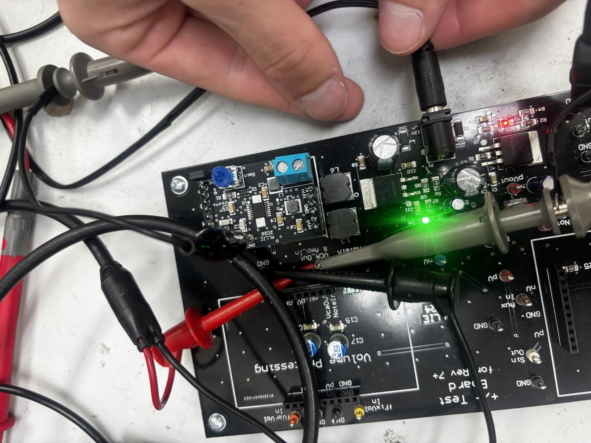
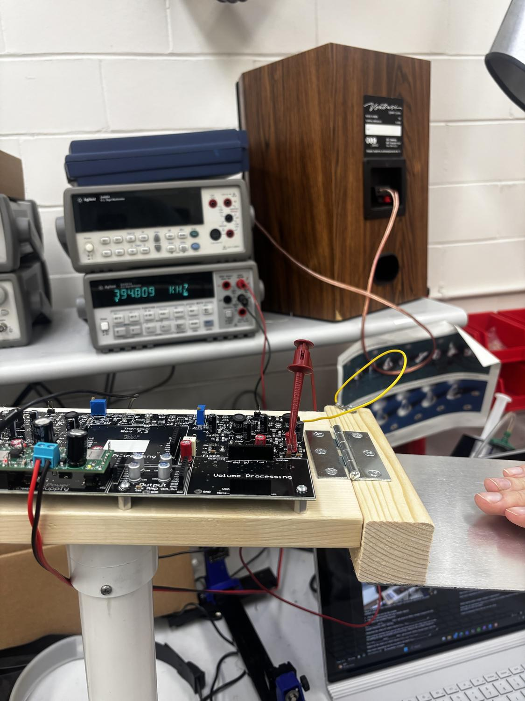
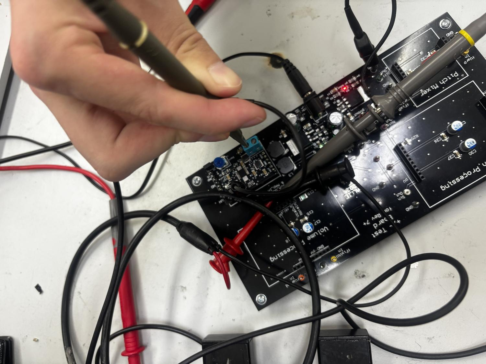
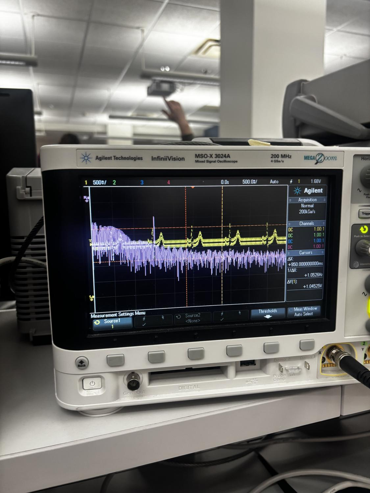

Electrical engineering · Embedded systems
Sashank
Vinnakota
I write code and watch it move real hardware. These are projects I've worked on, rebuilt as simulations you can open and try, and photographs from the bench where the actual work happened.
Read on ↓Probing the regulator input · rails good

Who I am
About
Building things that actually work, and chasing the problems I don’t know how to solve yet.
I'm an electrical engineering student who finds the most satisfaction in building things that actually work. There's something about writing a piece of code, connecting it to hardware, and seeing something physical respond that never gets old.
What draws me to engineering is the process of figuring things out. I enjoy problems that push me beyond what I already know, whether that means learning a new technology, debugging something that refuses to work, or approaching a problem from a completely different direction. I don't need to know how to do something before I start. I am curious enough to figure it out.
My projects span embedded systems, biomedical devices, signal processing, computer vision, and PCB design. They're different fields, but they're all driven by the same thing: the curiosity to understand how something works, and the determination to build it myself.
- Hardware
- Altium Designer · PCB layout · sensor interfaces · board bring-up
- Firmware
- C / C++ · STM32 · ESP32 · FreeRTOS · register-level drivers · Verilog / VHDL
- Tools
- Python · OpenCV · Git · Linux · oscilloscope · logic analyzer · power analyzer
- sashankvinnakota@gmail.com
- sashank-vinnakota
- Code
- sashankvinnakota-jpg

Selected work
Five projects
Each one opens into a working model in the browser. The firmware logic inside most of them is ported from the code I wrote.

Photographs